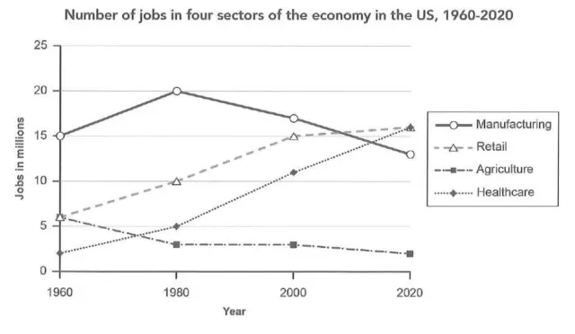

Task 1 of 2
You should spend about 20 minutes on this task.
The graph below gives information about the number of jobs in four sectors of the economy in the US between 1960 and 2020.
Summarise the information by selecting and reporting the main features, and make comparisons where relevant.
Write at least 150 words.
